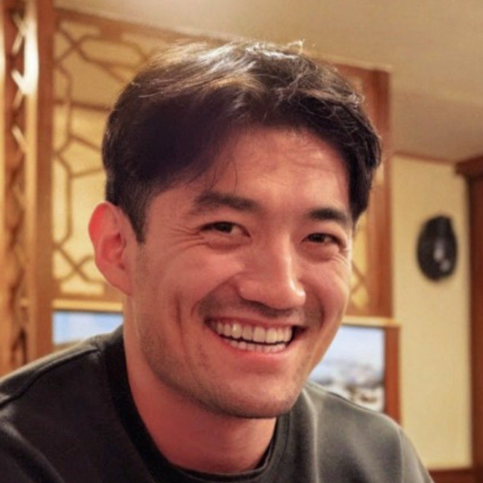

yutaizho at usc.edu
Hello! I am a 4th year Computer Science Ph.D. student at
USC, where I am fortunate to be
co-advised by Erdem Bıyık and
Stephen Tu.
My research is centered on RL from preference feedback, representation learning, and offline policy evaluation.
I am currently collaborating with
Toyota Research Institute.
Prior to my Ph.D., I was a research engineer at
MIT Lincoln Laboratory for 3.5 years,
where I collaborated closely with Mykel Kochenderfer and
completed graduate coursework from Stanford Online while working full time.
Even before that, I received my B.S. in Computer Science from the
University of Florida, where
I worked with Alina Zare.
Fun fact: My name is pronounced "you-tie", but it is frequently mispronounced as "you-tee" or "Utah". I have even gotten "Tyler" once!
CV / GitHub / Twitter / LinkedIn / Google Scholar

(* denotes equal contribution)
I spent much of my childhood in Shanghai, China, and much of my teenage / college years in Florida, USA. Outside of work, I love strength training and have competed in multiple powerlifting and strongman competitions. I just learned how to swim in 2025 (despite growing up in coastal cities all my life), and am now trying to learn salsa and bachata!